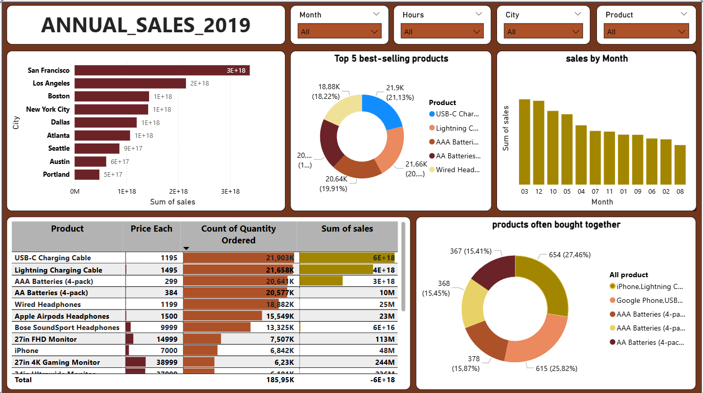

DASHBOARD · 01
Annual Sales Report
Làm sạch dữ liệu với Pandas & NumPy, khai thác insight bằng thống kê và trực quan hoá (Matplotlib, Seaborn), phát hiện xu hướng & bất thường. Dựng dashboard tương tác trên Power BI để hỗ trợ ra quyết định nhanh.

Case study
- Vấn đề: doanh số phân tán giữa nhiều kênh và khó nhận diện xu hướng nhanh.
- Cách giải quyết: làm sạch dữ liệu, xác định KPI chính và dựng dashboard Power BI để theo dõi doanh thu, lợi nhuận và biến động theo thời gian.
- Kết quả: người dùng có thể nắm được tình hình bán hàng nhanh hơn và điều chỉnh chiến lược kịp thời.
Power BI Report
Mở dự án